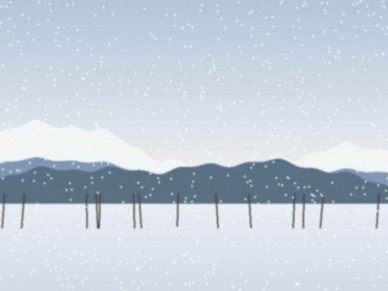
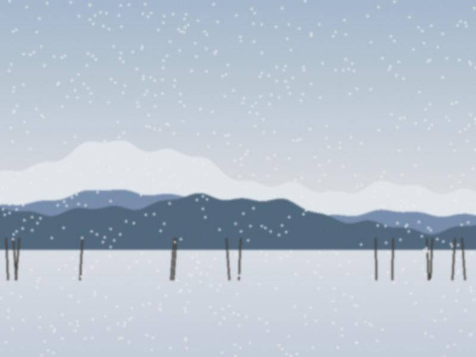

not really snow, the pass at 3,000 m on a trip with the photo club. it was snowing up there. in august.the light in talas in late june lasts until nearly ten. you walk home in a gold that doesn't want to go. my grandmother says it's the mountains holding on to the sun with their teeth.
 grandfather's Zenit. old city, saturday. i learned to measure the light with my hand.
grandfather's Zenit. old city, saturday. i learned to measure the light with my hand.36 frames, 29 came out. the man at the photo shop said: "you're improving." he said it like he was disappointed.
8 march. the whole city smells like tulips and car exhaust.

the first real snow. the bus stop by the bridge. the quote on the wall is still there, under a thin layer of white.some days the mountains are enough. other days the snow on the bench is enough. i wonder how much light a person needs, in total.